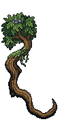
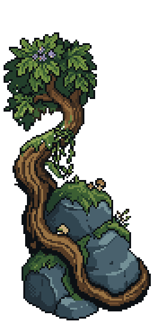
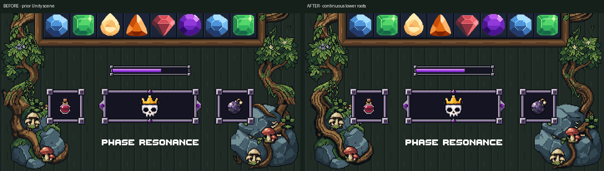
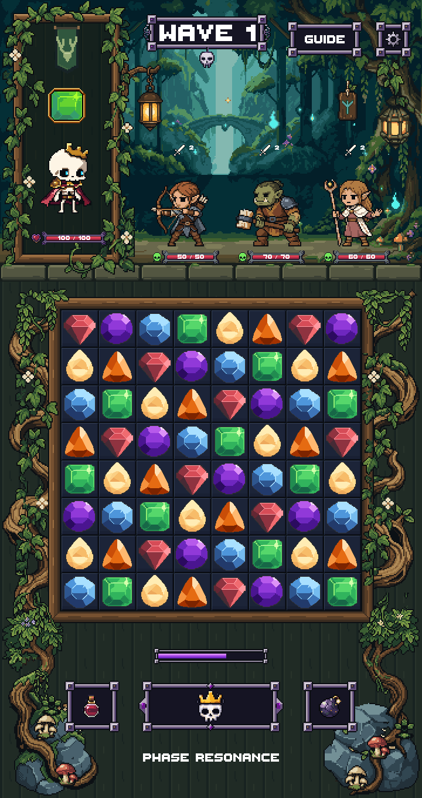
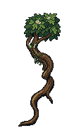
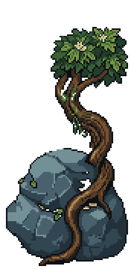
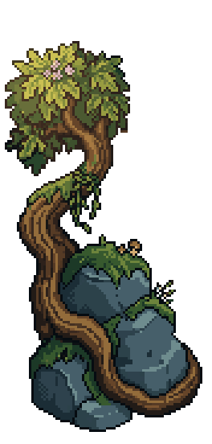
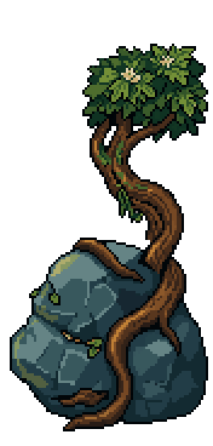

Left root · 88×180 · 19 colors


LibreSprite root source · Stone layer sourceTwo rebuilt bark curves replace the flared, overlapping bough ends. Each root flows from its existing leaf crown into the wrap around its stone anchor.
The approved separator, upper scene, board/frame and HUD remain unchanged. Existing mushroom and moss accent sprites retain their pixels and positions. Their integration pass is Stage 3 and has not started.




LibreSprite root source · Stone layer source

LibreSprite root source · Stone layer sourceUnity compilation and review tests passed at 720×1360 and 1440×2720. Rendering doubles exactly. All pixels above the lower repair area, board cells, painted board frame, HUD artwork/text and existing mushroom/moss accents match the prior capture. Native PNGs have binary transparency and at least two pixels of canvas clearance. LibreSprite save/reopen comparisons are exact.
These are actual Unity art-review captures with static approved actors/UI. No production combat or physical-device testing was performed in this stage.
PixelLab: 2 completed image edits, 2 subscription generations, $0 USD credits. Latest polish pass total: 9 generations debited including Stage 1's reported cancelled-request debit.


The generated stone repaint was discarded. Only the repaired roots were cleaned and used, with existing stone material pixels preserved underneath.
Report · Pixel validation · Unity results · Usage
Stopped for Stage 2 review. No merge.